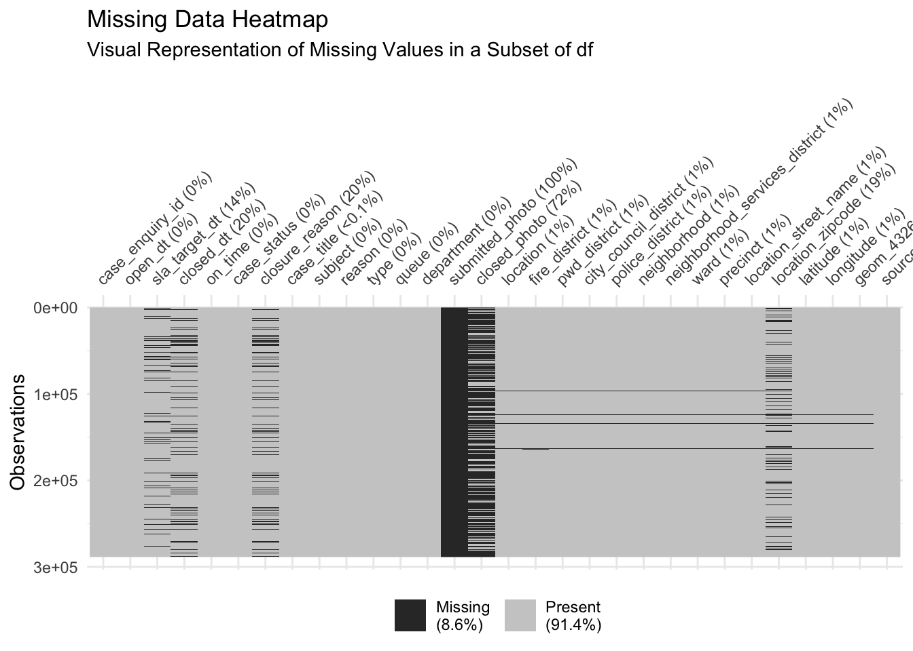

For this project, we are using the latest Boston 311 Service Requests dataset of year 2024, which is publicly available on the Boston.gov open data portal. This dataset is maintained by the City of Boston and contains detailed records of non-emergency service requests submitted by residents through the city’s 311 system. The data includes fields such as request types, submission dates, locations, statuses, and resolution times, offering a comprehensive view of the city’s service management. The dataset is updated regularly, ensuring it reflects current trends, although the exact frequency of updates is not explicitly specified. It is provided in a tabular format, accessible as a CSV file, and includes both categorical and geographic data, such as latitude, longitude, and neighborhood identifiers. One potential challenge is the presence of missing or inconsistent data, particularly in fields like “closure reason” or “submitted photo,” which will require preprocessing. We plan to import the dataset into RStudio using the read.csv function for cleaning and analysis. The dataset can be accessed from its original source at Boston 311 Service Requests with the year 2024. There are 274,415 total rows and 30 columns in this dataset.
2.2 Missing value analysis
Code
# load packages and read in datalibrary(readr)library(dplyr)
Attaching package: 'dplyr'
The following objects are masked from 'package:stats':
filter, lag
The following objects are masked from 'package:base':
intersect, setdiff, setequal, union
Code
library(ggplot2)
Warning: package 'ggplot2' was built under R version 4.2.3
Rows: 274415 Columns: 30
── Column specification ────────────────────────────────────────────────────────
Delimiter: ","
chr (20): on_time, case_status, closure_reason, case_title, subject, reason...
dbl (6): case_enquiry_id, fire_district, city_council_district, neighborho...
lgl (1): submitted_photo
dttm (3): open_dt, sla_target_dt, closed_dt
ℹ Use `spec()` to retrieve the full column specification for this data.
ℹ Specify the column types or set `show_col_types = FALSE` to quiet this message.
Code
dim(df)
[1] 274415 30
Code
# pivot and calculate the number of missing values per variablemissing_percent <- df %>%summarise(across(everything(), ~mean(is.na(.)) *100)) %>%pivot_longer(cols =everything(),names_to ="Variable",values_to ="MissingPercent" ) %>%arrange(desc(MissingPercent))# create the bar plotggplot(missing_percent, aes(x =reorder(Variable, -MissingPercent), y = MissingPercent)) +geom_bar(stat ="identity", fill ="tomato") +theme_minimal() +labs(title ="Percentage of Missing Values per Variable",x ="Variables",y ="Percentage of Missing Values (%)" ) +theme(axis.text.x =element_text(angle =45, hjust =1),plot.title =element_text(hjust =0.5),axis.title.y =element_text(margin =margin(r =10)) ) +geom_text(aes(label =sprintf("%.1f%%", MissingPercent)), angle =45,hjust =-0.1, vjust =-0.5, size =2.5) +ylim(0, max(missing_percent$MissingPercent) *1.1)

By graphing the percent of null values in each column, we can see that null values make up all of the “submitted_photo” column, and most of the “closed_photo” columns. Moreover, considering that these columns just contain links to photographs taken at the scene of the 311 request, these columns will not very important to our analysis.
Additionally, columns such as “closure_reason”, “closed_dt”, “location_zipcode”, and “sla_target_dt” are around 20% null values. This would only potentially impact analysis related to request response times, as we have other columns such as “location” and “latitude”/“longitude” to help us understand geographical trends, and columns such as “type”, “reason”, and “subject” to help us with request categorization.
All of the other columns either have 0 null values, or a very small percentage (< 1.5%) of null values, indicating that the dataset is generally complete and reliable for most analyses.
Code
# https://cran.r-project.org/web/packages/naniar/vignettes/naniar-visualisation.html# install.packages("naniar")library(naniar)naniar::vis_miss(df,warn_large_data =FALSE) +labs(title ="Missing Data Heatmap",subtitle ="Visual Representation of Missing Values in a Subset of df" )
This plot provides a more detailed visualiation of the amount ane location of missing data, and also providing information on the overall percentage of missing values overall in the legend.
Specifically, we can infer that missingness is not exactly uniform, meaning that there may be clusters of rows with higher concentrations of missing data. For example, in the “closed_photo” column of the plot, we can identify a few clusters where there is more/less missing data. We also get a proportion on the total amount of missing values in our dataset–8.6%, indicating that while the overall proportion of missing data is relatively low.